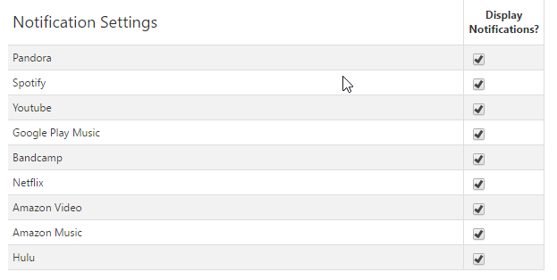

Change Log
Version 1.17.0
- Removed unused popup code.
- Fixed media controls background being squished.
- Fixed controls being added after controller is disconnected.
- Fixed keyboard shortcuts being intercepted by Hulu search.
- Fixed Amazon Music new content showing as "loading...".
- Added Amazon Music CDN.
- Cleaned up code.
- Removed unused popup HTML/css.
- Much faster/slower speed playback controls are no longer locked to increments of 0.5.
- The new content provider tab opened from clicking the browser action is now focused on opening.
Version 1.16.0
Version 1.15.0
- Fixed issue where Spotify would display new content notifications when hovering over song title.
- Site blacklist now checks against the content source as well as current page URL.
- Fixed issue where newly-added media elements were not being detected.
- Added support for Twitch.
- Unified settings retrieval/handling in background procress.
- Added ability to reset all settings to defaults from options page.
- Controller colors are now customizable.
- Added the ability to loop content for media controllers.
- Added the ability to enable/disable individual controllers.
- Generalized options popup greatly to help ease new controller addition.
- Improved status polling for media controllers.
- Centralized handling of settings loading/change handling in controllers.
- Improved and unified audio/video element recognition in webpage.
- Fixed new content not showing notification when the same content was repeated.
- Performed a massive re-organization of extension file structure to move everything out from a single directory.
- Fixed spamming console with erros on extension reload.
Version 1.14.0
- Added descriptive change labels to change log.
-
Added site blacklist option to prevent controlling generic media on certain sites.

-
Added ability to remove media controls.

-
Made media controls draggable.

- Fixed pause on inactivity option label
- Fixed media controls not appearing on Netflix
- Updated default install/update settings.
Version 1.13.0
-
Added option to disable auto-pause on a per-tab basis through browser action context menu.
(Right click browser action icon.)

- Added option to disable showing auto-paused content notification.
- Added notifications to display when content is auto-paused. Notifications include a prompt to disable auto-pause for that content's tab.
-
Made showing change log on update configurable.

- Fixed playback speed control icons not loading correctly on some computers.
- Abstracted content scripts in manifest.json to make adding new controllers/scripts easier.
- Fixed issue where keyboard shortcuts were being handled multiple times after opening multiple videos on Youtube.
- Fixed playback controls not working when Netflix was full-screened.
Version 1.11.0
Version 1.10.0

Version 1.9.1
- Fixed an issue where multiple playback speed controls were being appended to the document.
Version 1.9.0

Version 1.8.0

Version 1.7.0
- Added support for Hulu.
- Added support for Amazon Video.
- Added support for Amazon Music.
- Added support for Netflix.
Version 1.6.0
- Updated promotional materials.
- Fixed issue where notifications for Youtube would not have a thumbnail.
- A notification is now shown when the same content is played again.
- Now only retrieve tab/frame name when content is found.
- Reformatted notifications table in options page. 
- Add ability to support generic HTML audio and video elements on any webpage.
- Fixed issue where focus/blur was being handled multiple times on the same page.
- Added a more reliable way to check if a controller is playing in the active tab.
- Prevent locking due to inactivity on Youtube.
- Fixed Youtube not recognizing that a new Youtube video was opened.
Version 1.5.0
Version 1.4.0
Version 1.3.0
- Added support for Bandcamp.

Version 1.1.1
- Fixed issue with Google Play Music not being recognized by some people.
-
Content change notifications now display artwork.
- Required adding permission for each content provider's CDN.

- Added 'Next' button to content change notification.
-
Initial addition of more content controls.
- Previous, Next, Like, Unlike, Dislike, Undislike
- Support for various controls depends on the content provider.
Version 1.1.0
- Added option to pause content when the computer is locked or after a set period of inactivity.
Version 1.0.0
- Uploaded to Chrome Web Store.
- Created promotional images.
- Updated options page to use include jQuery instead of CDN.
-
Added 'Default Site' option.
- Clicking the browser action when no content is playing will open the default site in a new tab.

- Renamed extension to 'Easy Control'.
- Created README.md.
- Added options page.
-
Added better icon.

- Fixed issue with notifications only showing up the first time.
- Fixed artist name issue with Pandora.
- Added support for Google Play Music.
- Added notifications on content change.
- Added keyboard shortcut to pause/play content.
- Added support for Youtube.
- Code cleanup.
- Added support for Spotify.
- Added support for Pandora.